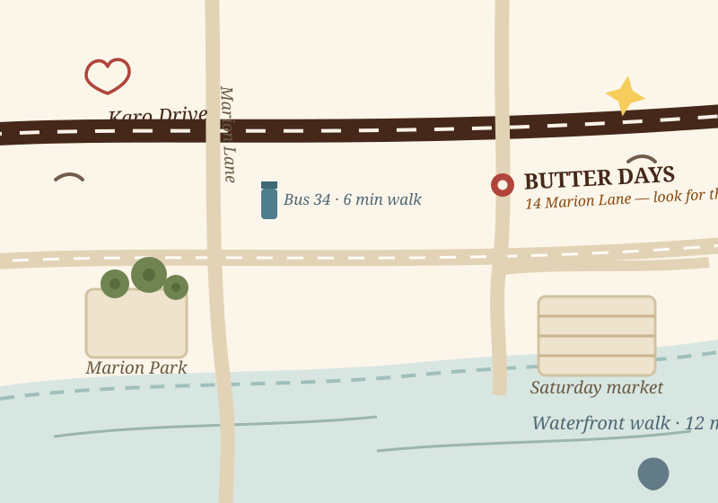

Come find the yellow awning
Find us at 14 Marion Lane in Kelburn, just off Karo Drive and beside the park gates.
Checking today’s hours…

Open the neighbourhood map full size (opens in a new tab)Open hours
Tuesday to Sunday
- Tue–Fri7am–3pm
- Sat–Sun8am–1pm
- MondayClosed
Getting here
- Bus 34Karo Dr stop, 6 min walk
- Cable carTo Kelburn, 10 min downhill
- ParkingMarion Park, free 60 min
- Waterfront12 min stroll, uphill home
Contact
How can we help?
Contact us about cakes, catering, an upcoming visit or any other question. We will be glad to help.
Visit
14 Marion Lane, Kelburn, Wellington 6012
hello@butterdays.nz
Replies within two working days.
Phone
(04) 555 0119
Please call during opening hours.
Cakes & catering?
For cake and catering enquiries, please use our dedicated enquiry form.
Before you visit
Quick answers
When do the almond croissants actually run out?
On weekends we often sell out before 10am. On weekdays, croissants usually last until around 11am. Availability varies each day.
Can I bring a laptop?
Laptop seating is available on weekdays, with a small work bench by the window. On weekends, seating is limited.
Is there anything gluten-free?
Our flourless orange and almond cake is often available, along with seasonal choices. We handle wheat in the same kitchen, so please ask our team about ingredients and preparation.
Do you take table bookings?
We do not take table bookings. For groups of eight or more, please email us in advance so we can suggest a suitable time.
Is this a real bakery?
Butter Days is a fictional bakery built as a design demonstration. Opening hours, prices and contact details on this site are samples.